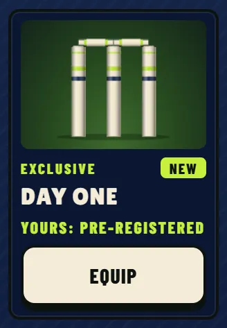

The trailer
Our new trailer. Everything in it is the game, cut to music we wrote. It comes out on Google Play on 3 December.
Pre-register on Google PlayOut 3 December
News about Tonk! Cricket and notes on each update, newest first.
Our new trailer. Everything in it is the game, cut to music we wrote. It comes out on Google Play on 3 December.
Pre-register on Google PlayOut 3 December

You can now pre-register for Tonk! Cricket on Google Play. The game comes out on Android on 3 December 2026.
If you pre-register, you get the DAY ONE stumps. They are a cream set with lime and navy bands, and only players who pre-register can have them. They change how the stumps look and nothing else. When the game comes out, open it on the same Google account and they will be waiting in the stump shop.
The iPhone version comes later. We will post the date here when there is one.
Pre-register on Google PlayReward terms
Talk about the game, report bugs and share ideas on our Discord: join the Muppet Dev Games server.